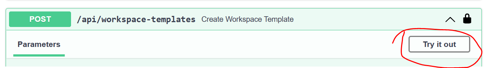

Deploying Azure TRE manually
By following this guide you will deploy a new Azure TRE instance for development and testing purposes.
Steps
Bootstrap and create prerequisite resources
- By now you should have a developer environment set up
- Create app registrations for auth; follow the Authentication & authorization guide
Configure variables
Before running any of the scripts, the configuration variables need to be set. This is done in an .env file, and this file is read and parsed by the scripts.
Info
The .tfvars file is not used, this is intentional. The .env file format is easier to parse, meaning we can use the values for bash scripts and other purposes.
-
Copy
/devops/.env.sampleto/devops/.env.cp devops/.env.sample devops/.envThen, open the
.envfile in a text editor and set the values for the required variables described in the table below:Environment variable name Description LOCATIONThe Azure location (region) for all resources. MGMT_RESOURCE_GROUP_NAMEThe shared resource group for all management resources, including the storage account. MGMT_STORAGE_ACCOUNT_NAMEThe name of the storage account to hold the Terraform state and other deployment artifacts. TERRAFORM_STATE_CONTAINER_NAMEThe name of the blob container to hold the Terraform state Default value is tfstate.IMAGE_TAGThe default tag for Docker images that will be pushed to the container registry and deployed with the Azure TRE. ACR_NAMEA globally unique name for the Azure Container Registry (ACR) that will be created to store deployment images. ARM_SUBSCRIPTION_IDOptional for manual deployment. If not specified the az cliselected subscription will be used. The Azure subscription ID for all resources.ARM_CLIENT_IDOptional for manual deployment without logged-in credentials. The client whose azure identity will be used to deploy the solution. ARM_CLIENT_SECRETOptional for manual deployment without logged-in credentials. The password of the client defined in ARM_CLIENT_ID.ARM_TENANT_IDOptional for manual deployment. If not specified the az cliselected subscription will be used. The AAD tenant of the client defined inARM_CLIENT_ID.PORTER_OUTPUT_CONTAINER_NAMEThe name of the storage container where to store the workspace/workspace service deployment output. Workspaces and workspace templates are implemented using Porter bundles - hence the name of the variable. The storage account used is the one defined in STATE_STORAGE_ACCOUNT_NAME.DEBUGIf set to "true" disables purge protection of keyvault. -
Copy
/templates/core/.env.sampleto/templates/core/.envand set values for all variables described in the table below:cp templates/core/.env.sample templates/core/.envEnvironment variable name Description TRE_IDA globally unique identifier. TRE_IDcan be found in the resource names of the Azure TRE instance; for example, aTRE_IDofmytre-dev-3142will result in a resource group name for Azure TRE instance ofrg-mytre-dev-3142. This must be less than 12 characters. Allowed characters: Alphanumeric, underscores, and hyphens.CORE_ADDRESS_SPACEThe address space for the Azure TRE core virtual network. /22or larger.TRE_ADDRESS_SPACEThe address space for the whole TRE environment virtual network where workspaces networks will be created (can include the core network as well). E.g. 10.0.0.0/12API_IMAGE_TAGThe tag of the API image. Make it the same as IMAGE_TAGabove.RESOURCE_PROCESSOR_VMSS_PORTER_IMAGE_TAGThe tag of the resource processor image. Make it the same as IMAGE_TAGabove.GITEA_IMAGE_TAGThe tag of the Gitea image. Make it the same as IMAGE_TAGabove.SWAGGER_UI_CLIENT_IDGenerated when following auth guide. Client ID for swagger client to make requests. AAD_TENANT_IDGenerated when following auth guide. Tenant id against which auth is performed. API_CLIENT_IDGenerated when following auth guide. Client id of the "TRE API". API_CLIENT_SECRETGenerated when following auth guide. Client secret of the "TRE API". DEPLOY_GITEAIf set to falsedisables deployment of the Gitea shared service.DEPLOY_NEXUSIf set to falsedisables deployment of the Nexus shared service.
Deploy
The deployment of the Azure TRE is done via Terraform. Run:
make all
Once the deployment is complete, you will see a few output parameters which are the result of your deployment.
app_gateway_name = "agw-<TRE_ID>"
azure_tre_fqdn = "<TRE_ID>.<LOCATION>.cloudapp.azure.com"
core_resource_group_name = "rg-<TRE_ID>"
keyvault_name = "kv-<TRE_ID>"
log_analytics_name = "log-<TRE_ID>"
static_web_storage = "stwebaz<TRE_ID>"
The Azure TRE is initially deployed with an invalid self-signed SSL certificate. This certificate is stored in the deployed Key Vault and can/should be replaced with one valid for the configured domain name. To use a certificate from Let's Encrypt, simply run the command:
make letsencrypt
Caution
There are rate limits with Let's Encrypt, so this should not be run when not needed.
Details of deployment and infrastructure
The following section is for informational purposes, and the steps don't need to be executed as they are part of make all above.
Management Infrastructure
We will create management infrastructure in your subscription. This includes resources, such as a storage account and container registry that will enable deployment the Azure TRE. Once the infrastructure is deployed we will build the container images required for deployment. The management infrastructure can serve multiple Azure TRE deployments.
Bootstrap the back-end state
As a principle, we want all the Azure TRE resources defined in Terraform, including the storage account used by Terraform to hold its back-end state.
A bootstrap script is used to create the initial storage account and resource group using the Azure CLI. Then Terraform is initialized using this storage account as a back-end, and the storage account imported into the state.
You can do this step using the following command but as stated above this is already part of make all.
make bootstrap
This script should never need running a second time even if the other management resources are modified.
Management Resource Deployment
The deployment of the rest of the shared management resources is done via Terraform, and the various .tf files in the root of this repo.
make mgmt-deploy
This Terraform creates & configures the following:
- Resource Group (also in bootstrap).
- Storage Account for holding Terraform state (also in bootstrap).
- Azure Container Registry.
Build and push Docker images
Build and push the docker images required by the Azure TRE and publish them to the container registry created in the previous step.
make build-api-image
make build-resource-processor-vm-porter-image
make push-api-image
make push-resource-processor-vm-porter-image
Access the Azure TRE deployment
To get the Azure TRE URL, view azure_tre_fqdn in the output of the previous make all command, or run the following command to see it again:
cd templates/core/terraform
terraform output azure_tre_fqdn
Open the following URL in a browser, and you should see the Open API docs of Azure TRE API.
https://<azure_tre_fqdn>/docs
You can also create a request to the api/health endpoint to verify that the API is deployed and responds. You should see a pong response as a result of below request.
curl https://<azure_tre_fqdn>/api/health
Publishing and registering the base workspace bundle
-
Run:
register-bundle DIR=./templates/workspaces/baseCopy the resulting payload json.
-
Navigate to the Swagger UI at
https://<azure_tre_fqdn>/docs -
Log into the Swagger UI by clicking
Authorize, thenAuthorizeagain. You will be redirected to the login page. -
Once logged in. Click
Try it outon thePOST/api/workspace-templatesoperation:
-
Paste the payload json generated earlier into the
Request bodyfield, then clickExecute. Review the server response. -
To verify registration of the template do
GEToperation on/api/workspace-templates. The name of the template should now be listed.
Creating a base workspace
Now that we have published and registered a base workspace bundle we can use the deployed API to create a base workspace.
Info
All routes are auth protected. Click the green Authorize button to receive a token for swagger client.
As explained in the auth guide, every workspace has a corresponding app registration which can be created using the helper script /scripts/workspace-app-reg.py. Multiple workspaces can share an app registration.
Running the script will report app id of the generated app which needs to be used in the POST body below.
Go to azure_tre_fqdn/docs and use POST /api/workspaces with the sample body to create a base workspace.
{
"displayName": "manual-from-swagger",
"description": "workspace for team X",
"workspaceType": "tre-workspace-base",
"parameters": {},
"authConfig": {
"provider": "AAD",
"data": {
"app_id": "app id created above"
}
}
}
The API will report the workspace_id of the created workspace, which can be used to query deployment status by using /api/workspaces/<workspace_id>
You can also follow the progress in Azure portal as various resources come up.
Info
To query the status using the API your user needs to have TREResearcher or TREOwner role assigned to the app.
Deleting the Azure TRE deployment
To remove the Azure TRE and its resources from your Azure subscription run:
make tre-destroy